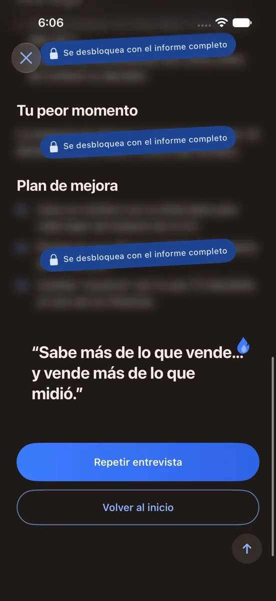
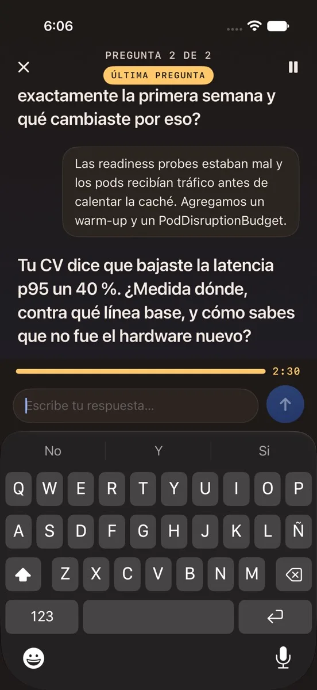
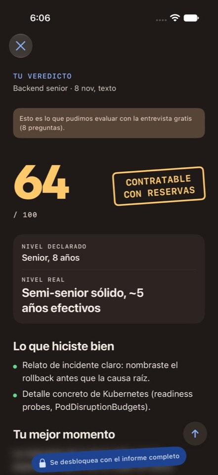
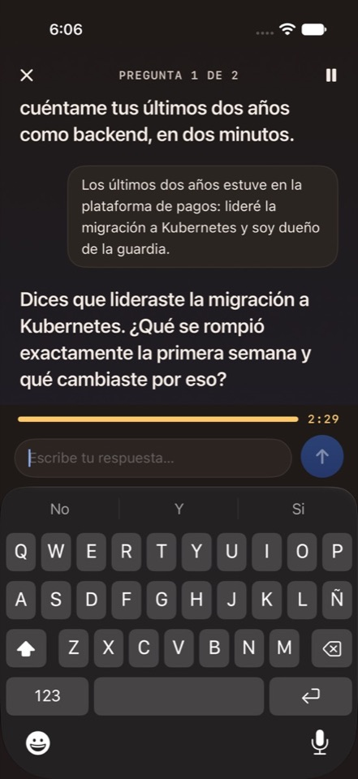
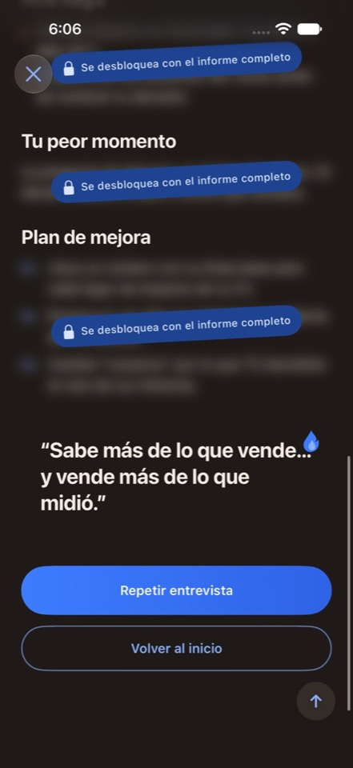

Roast InterviewPróximamente
Roast InterviewPróximamente
Para quienes se preparan para una entrevista de trabajo
Practica con una entrevistadora que te dice la verdad.
Sube tu CV y el cargo al que aplicas. Una IA entrevistadora te hace las preguntas que te van a hacer de verdad, respondes por escrito o en voz alta, y al final recibes tu puntaje y un veredicto honesto.
Próximamente en Google Play y App Store
¿No se abre tu correo? Escríbenos a hola@tutosapp.co.



01Roast Interview
Lo que hace por ti
Preguntas que salen de tu CV
No es una lista genérica: detecta inconsistencias y te pregunta por ellas, como en una entrevista real.

Presión que se adapta
Si respondes bien, sube la exigencia. Si te trabas, te ayuda a retomar.
Un puntaje para ese cargo
Al final recibes tu puntaje, tu nivel detectado y lo que hiciste bien, medido para ese puesto.
Mide tu progreso
Repite la entrevista con preguntas nuevas sobre los mismos temas y compara tus puntajes.
02Cómo funciona
Ensaya la entrevista antes de que cuente.
Sube tu CV
Pégalo o sube un PDF, un Word o una foto. Si tienes la oferta, agrégala.
Haz la entrevista
Responde por escrito o en voz alta, con tiempo por respuesta. La presión se ajusta a cómo te va.
Recibe tu veredicto
Tu puntaje, tu nivel detectado y lo que hiciste bien. El informe completo suma las red flags, tu peor momento con una mejor respuesta y un plan de mejora.
03Capturas de la app
Así se ve
Desliza para ver más pantallas



¿Cuándo sale?
Estamos terminando las pruebas. Muy pronto estará en Google Play y en App Store: escríbenos y te avisamos el día que salga.
¿Cuánto va a costar?
Cada día tienes una mini entrevista gratis de 8 preguntas, con puntaje y veredicto. Las entrevistas completas, con el informe completo, se compran con créditos, una sola vez y sin suscripción.
¿En qué idioma es la entrevista?
En español o en inglés. Por defecto sigue el idioma de tu CV, y puedes cambiarlo antes de empezar.
¿Puedo responder hablando?
Sí. Respondes por escrito o con tu voz; tu voz se convierte en texto y el audio no se guarda.
¿Necesito internet o una cuenta?
Necesitas internet durante la entrevista. No tienes que crear una cuenta.
¿Qué pasa con mis datos?
Las sesiones de entrevista se borran a las 24 horas y puedes eliminar tus datos desde Ajustes. Los detalles están en la política de privacidad.
Llega a tu próxima entrevista con práctica.
Roast Interview sale muy pronto. Escríbenos y te avisamos cuando esté lista.
Próximamente en Google Play y App Store